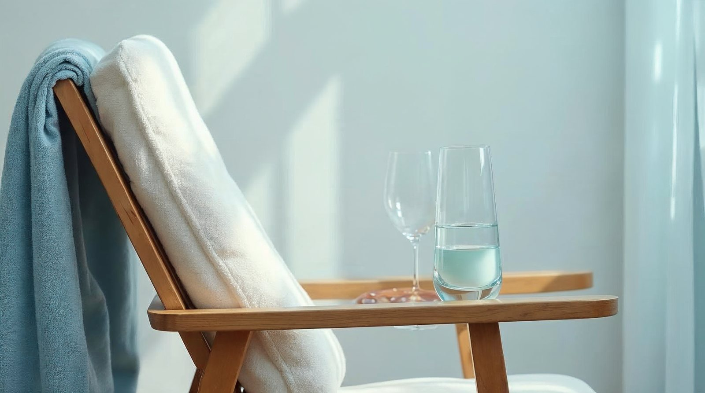
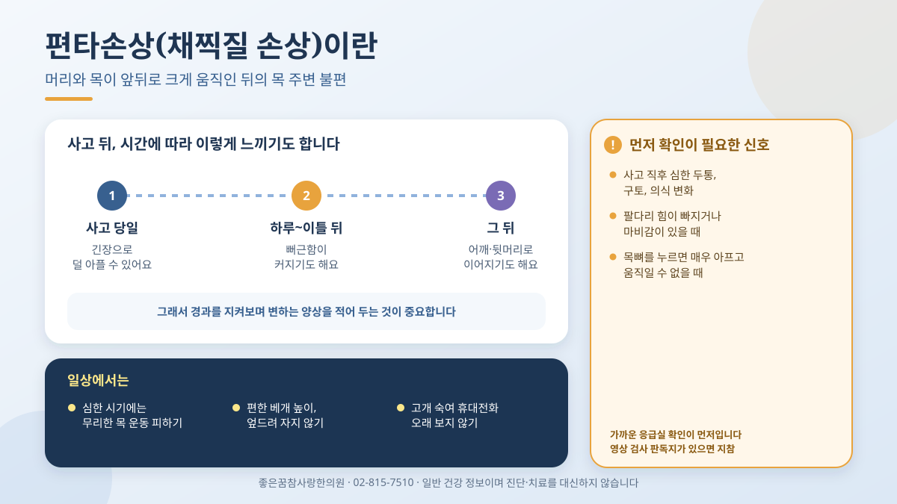

이종호 한의사 감수좋은꿈참사랑한의원 대표원장 (한의사 면허번호 19769)발행 2026-11-22 · 수정 2026-11-26
이 글의 차례
- 왜 이런 불편이 생길 수 있나요
- 시기에 따라 살피는 점이 다릅니다
- 먼저 이렇게 여쭙니다
- 일상에서 먼저 해 볼 수 있는 것
- 상황별 예시
- 스스로 점검해 보세요
- 편타손상과 다른 목 통증은 어떻게 다를까요?
- 왜 직접 부딪히지 않았는데 목이 아플까요
- 일상 자세는 이렇게 조정해 보세요
- 목이 움직이는 범위는 이렇게 기록해 보세요
- 목 통증과 함께 두통과 어깨 결림이 오는 이유는 무엇일까요?
- 일하거나 공부할 때는 어떻게 쉬어 줄까요?
- 다시 운동을 시작할 때는 어떻게 할까요?
- 아침에 목이 가장 뻣뻣할 때는 어떻게 할까요?
- 함께 탔던 가족도 살펴보세요
- 목 통증이 길어질 때 마음도 함께 살펴보세요
- 진료 전에 미리 정리해 두면 좋은 것
- 회복하는 동안 피하면 좋은 자세는 무엇일까요?
- 한의원에서 함께 살필 수 있는 경우
- 이렇게 기록해 오시면 상담이 쉬워집니다
- 얼마나 지켜보고 언제 상담할까요
- 이런 증상은 먼저 확인이 필요합니다
- 관련 글
편타손상은 교통사고 뒤 흔히 이야기되는 목 주변 손상으로, 시간이 지나 증상이 드러나기도 해 경과를 지켜보는 것이 중요합니다. 차가 뒤에서 부딪히는 사고 등에서 머리와 목이 채찍처럼 앞뒤로 움직이면 목 주변 근육과 인대에 부담이 갑니다.
다만 사고 뒤 의식이 흐려지거나, 두통이 점점 심해지며 구토가 나거나, 팔다리가 저리거나 힘이 빠진다면 한의원보다 가까운 응급실 확인이 먼저입니다.
왜 이런 불편이 생길 수 있나요
- 뒤에서 부딪히는 사고에서는 몸이 앞으로 밀리는 순간 머리가 뒤로 젖혀졌다가 앞으로 꺾이며 목에 큰 힘이 실릴 수 있습니다.
- 이때 목 주변 근육과 인대가 순간적으로 늘어나거나 긴장해 뻣뻣함과 통증이 생기는 경우가 많습니다.
- 사고 직후에는 긴장 때문에 덜 아프다가 하루나 이틀 뒤에 뻐근함이 커지는 분도 있습니다.
- 목의 긴장이 어깨와 뒷머리로 이어져 두통이나 어깨 결림으로 느껴지기도 합니다.
시기에 따라 살피는 점이 다릅니다
- 사고 직후부터 2~3일은 통증이 새로 나타나거나 커질 수 있는 시기라, 무리한 운동이나 강한 마사지는 피하고 위험 신호가 없는지부터 확인합니다.
- 붓기와 열감이 가라앉는 며칠 뒤부터는 통증 없는 범위에서 목을 천천히 움직여 굳지 않게 하는 것이 일반적인 안내입니다.
- 2주가 지나도 목이 굳어 있거나 두통과 어깨 결림이 이어진다면, 자세와 생활 속 움직임까지 함께 살펴볼 때입니다.
먼저 이렇게 여쭙니다
- 사고 때 목이 어느 방향으로 꺾였나요?
- 목 통증이 언제 시작되었나요?
- 두통, 어깨나 팔 저림이 함께 있나요?
- 고개를 돌리거나 숙일 때 어느 동작이 힘든가요?
- 사고 때 고개를 돌리고 있었나요, 머리 받침대 높이는 어땠나요?
- 사고 전부터 목이나 어깨가 불편했나요?
- 잠잘 때 편한 자세를 찾기 어려운가요?
일상에서 먼저 해 볼 수 있는 것
- 통증이 심한 시기에는 무리한 목 운동 피하기
- 베개를 편한 높이로 맞추고 엎드려 자는 자세 피하기
- 오래 고개를 숙이는 휴대전화 사용 줄이기
- 통증과 불편이 변하는 양상을 간단히 기록하기
- 운전이나 컴퓨터 작업 중에는 1시간마다 쉬는 틈에 목을 천천히 좌우로 돌려 굳지 않게 하기(아프면 멈추기)
- 무거운 짐을 들거나 고개를 오래 젖혀야 하는 일은 당분간 줄이기
- 아침에 일어날 때는 옆으로 돌아누워 팔로 몸을 받치며 천천히 일어나기
- 목이 굳은 느낌이 들 때는 따뜻한 샤워로 목과 어깨를 데운 뒤 천천히 움직여 보기
상황별 예시
- 예를 들어 출근길에 신호를 기다리다 뒤차에 부딪힌 직장인이라면, 당일은 괜찮다가 다음 날 아침 베개에서 고개를 들기 어려운 일이 생길 수 있습니다. 모니터를 눈높이로 올리고 1시간마다 목을 천천히 움직여 보며 어느 방향이 막히는지 적어 둡니다.
- 예를 들어 학원 차량에 타고 있다 급정거를 겪은 수험생이라면, 고개를 오래 숙이고 문제를 푸는 자세가 목의 긴장을 이어 가게 할 수 있어 독서대를 쓰고 쉬는 시간마다 고개를 들어 줍니다.
- 예를 들어 조수석에 앉아 있던 어르신이라면, 가벼운 사고에도 목뼈를 먼저 확인해야 하는 경우가 있어 병원 영상 검사를 받으셨는지부터 여쭙습니다. 원래 목이 뻣뻣했던 분도 많아 사고 전부터 있던 불편과 새로 생긴 불편을 나누어 말씀해 주시면 살피기가 쉽습니다.

스스로 점검해 보세요
- 고개를 좌우로 돌릴 때 한쪽이 덜 돌아가나요?
- 고개를 숙이거나 뒤로 젖힐 때 목 뒤가 당기나요?
- 뒷머리나 관자놀이 쪽 두통이 사고 뒤 생겼나요?
- 어깨나 날개뼈 사이가 결리나요?
- 팔이나 손가락이 저리거나 힘이 빠지는 느낌이 있나요?
- 아침에 일어날 때 목이 가장 뻣뻣한가요?
- 잠잘 때 편한 자세를 찾기 어려워 자주 깨나요?
편타손상과 다른 목 통증은 어떻게 다를까요?
잠을 잘못 자고 일어나 목이 돌아가지 않는 경우는 대개 계기가 된 밤이 분명하고, 한쪽 근육이 뭉쳐 특정 방향만 막히는 일이 많습니다. 편타손상은 사고라는 계기가 있고 앞뒤로 큰 힘이 실린 만큼, 목 뒤와 어깨, 날개뼈 사이까지 넓게 뻐근한 경우가 흔합니다.
평소 고개를 숙이고 오래 일해 생긴 목 결림은 서서히 쌓이며 오후로 갈수록 심해지는 모양을 보입니다. 사고 뒤 생긴 목 통증은 시작된 날을 짚을 수 있고, 아침에 일어날 때 더 뻣뻣한 경우가 많습니다.
목에서 팔이나 손가락으로 저림이 이어진다면 근육만의 문제가 아니라 목의 신경이 함께 영향을 받았을 수 있어, 병원 검사 결과와 함께 진찰에서 감각과 근력을 확인합니다.
왜 직접 부딪히지 않았는데 목이 아플까요
차가 뒤에서 부딪히면 의자에 기댄 몸통이 먼저 앞으로 밀려 나가는데, 무거운 머리는 제자리에 남으려 해 순간적으로 뒤로 젖혀집니다. 곧이어 반동으로 머리가 앞으로 꺾이며, 목이 아주 짧은 순간에 두 번 크게 휘게 됩니다.
머리 무게는 볼링공에 비유될 만큼 무거워, 이 움직임이 1초도 안 되는 사이에 일어나도 목 주변 근육과 인대에는 큰 부담이 됩니다. 머리 받침대가 머리보다 낮거나 뒷머리와 멀리 떨어져 있으면 뒤로 젖혀지는 폭이 커질 수 있습니다.
일상 자세는 이렇게 조정해 보세요
- 베개는 바로 누웠을 때 턱이 들리거나 너무 당겨지지 않는 높이로, 옆으로 누웠을 때 코와 가슴 가운데가 일직선이 되는 정도로 맞춥니다.
- 차에 탈 때는 머리 받침대 윗부분이 정수리 높이에 가깝게 오고, 뒷머리와의 간격이 너무 벌어지지 않게 조정합니다.
- 컴퓨터 화면은 눈높이 가까이 올리고, 휴대전화는 가슴 높이까지 들어 고개를 오래 숙이지 않게 합니다.
- 무거운 가방은 한쪽 어깨에만 메지 말고 양쪽으로 나누거나 손에 번갈아 듭니다.
- 고개를 크게 돌려야 할 때는 목만 돌리지 말고 몸통을 함께 돌립니다.
목이 움직이는 범위는 이렇게 기록해 보세요
하루 한 번 같은 시각에 거울 앞에 서서 세 가지 동작을 천천히 해 봅니다. 턱을 가슴 쪽으로 당기기, 천장을 보듯 고개 들기, 어깨 너머로 좌우 돌아보기입니다.
각 동작에서 어디까지 편하게 가는지, 어느 지점에서 당기거나 아픈지를 "왼쪽은 어깨까지, 오른쪽은 반쯤"처럼 적어 두세요. 아픈 지점을 넘겨 억지로 밀어붙이지는 않습니다.
이 기록이 쌓이면 어느 방향이 먼저 풀리고 어느 방향이 오래 남는지 보여, 진료 때 지난번과 같은 동작으로 비교하기가 쉬워집니다.
목 통증과 함께 두통과 어깨 결림이 오는 이유는 무엇일까요?
목 뒤의 근육은 뒷머리와 어깨, 날개뼈까지 길게 이어져 있습니다. 사고로 목 근육이 긴장하면 그 긴장이 위로는 뒷머리를 조이는 두통으로, 아래로는 어깨와 날개뼈 사이의 결림으로 함께 느껴지는 경우가 많습니다.
목이 아파 고개를 덜 움직이다 보면 어깨를 올린 채 굳히는 자세가 이어지고, 이것이 다시 목과 어깨를 무겁게 만드는 순환이 생기기도 합니다. 그래서 목만이 아니라 어깨와 등, 머리까지 이어서 살핍니다.
일하거나 공부할 때는 어떻게 쉬어 줄까요?
책상 앞에 앉아 있는 시간에는 30~50분마다 고개를 들고, 어깨를 천천히 뒤로 돌리며 가슴을 펴 줍니다. 아프지 않은 범위에서 고개를 좌우로 천천히 돌려 보는 것도 굳는 것을 막는 데 도움이 됩니다.
전화를 어깨와 귀 사이에 끼우고 통화하는 습관은 목 한쪽에 부담을 크게 주니, 이어폰이나 스피커를 쓰세요. 무거운 노트북을 들고 다녀야 한다면 백팩으로 바꿔 양쪽 어깨에 무게를 나눕니다.
다시 운동을 시작할 때는 어떻게 할까요?
목이 한결 편해졌다면 걷기처럼 목에 충격이 적은 운동부터 다시 시작합니다. 달리기, 수영의 자유형처럼 고개를 많이 돌리는 운동, 무거운 기구 운동은 목의 움직임이 충분히 돌아온 뒤로 미뤄 두세요.
운동한 다음 날 목이 다시 뻣뻣해진다면 양을 줄이고, 어떤 동작에서 불편했는지 적어 두었다가 진료 때 함께 이야기해 주세요.
아침에 목이 가장 뻣뻣할 때는 어떻게 할까요?
자는 동안 움직임이 줄어 아침에 목이 가장 굳어 있는 분이 많습니다. 눈을 뜨자마자 고개를 번쩍 들기보다, 옆으로 돌아누워 팔로 몸을 받치며 천천히 일어나 앉으세요.
일어난 뒤 따뜻한 물로 샤워하며 목과 어깨를 데우면 움직임이 한결 부드러워지는 경우가 있습니다. 그 뒤에 아프지 않은 범위에서 고개를 천천히 숙였다 들기, 좌우로 돌리기를 몇 번 해 봅니다.
아침의 뻣뻣함이 오전 중에 얼마나 빨리 풀리는지도 기록해 두세요. 풀리는 데 걸리는 시간이 날이 갈수록 짧아지는지 보는 것도 경과를 살피는 방법입니다.
함께 탔던 가족도 살펴보세요
같은 차에 탔던 가족도 앉은 자리와 자세에 따라 다른 곳이 불편할 수 있습니다. 뒷좌석에 있던 아이는 아프다는 표현 대신 고개를 한쪽으로 기울이거나 잠투정이 늘 수 있어 보호자가 살펴 주세요.
어르신은 원래 목이 뻣뻣했던 경우가 많아 사고 뒤 달라진 점을 놓치기 쉽습니다. 가족이 함께 기억을 정리해 드리면 진료 때 이야기가 한결 정확해집니다.
목 통증이 길어질 때 마음도 함께 살펴보세요
목이 오래 아프면 잠이 얕아지고, 잠이 모자라면 같은 통증도 더 크게 느껴지는 순환이 생기기 쉽습니다. 사고 뒤 차를 타는 것이 긴장되거나 작은 소리에 놀라는 일이 늘었다면 그것도 목의 긴장을 이어 가게 하는 요인이 될 수 있습니다.
그래서 목을 살피는 진료에서도 잠과 소화, 놀란 마음까지 함께 여쭙습니다. 몸이 쉬는 시간을 충분히 갖도록 잠자리 시각을 일정하게 두고, 하루 중 짧게라도 긴장을 내려놓는 시간을 만들어 보세요.
진료 전에 미리 정리해 두면 좋은 것
사고 당시 앉아 있던 자리, 고개를 어느 쪽으로 향하고 있었는지, 머리 받침대 높이가 어땠는지를 기억나는 대로 적어 오세요. 기억이 흐릿하면 함께 탔던 사람에게 물어 보충해도 좋습니다.
병원에서 받은 영상 검사 결과지와 복용 중인 약 목록도 함께 가져오시면, 지금 목의 상태를 살피고 이어서 할 일을 정하는 데 도움이 됩니다. 사고 전부터 목이나 어깨가 불편했다면 그 이야기도 나눠 적어 주세요.
회복하는 동안 피하면 좋은 자세는 무엇일까요?
엎드려 자는 자세는 고개를 한쪽으로 오래 돌린 채 두게 되어 목에 부담이 됩니다. 소파 팔걸이에 머리를 기대고 눕거나, 높은 베개를 겹쳐 베고 텔레비전을 보는 자세도 목을 앞으로 꺾어 둡니다.
높은 선반의 물건을 꺼내려고 고개를 오래 젖히거나, 머리를 감을 때 세면대에 고개를 깊이 숙이는 동작도 회복하는 동안은 줄여 보세요. 작은 의자를 받치거나 샤워기로 서서 감는 것처럼 방법을 조금 바꾸면 목의 부담을 덜 수 있습니다.
한의원에서 함께 살필 수 있는 경우
- 사고 뒤 목이 뻣뻣하고 움직이기 불편한 경우 목 주변 근육과 관절을 함께 살핍니다.
- 목 통증이 어깨와 머리로 이어지는 경우 어깨와 뒷머리까지 이어진 긴장을 같이 봅니다.
- 시간이 지나도 목이 굳어 있는 경우 생활 속 자세와 움직이는 방법을 함께 정합니다.
좋은꿈참사랑한의원에서는 첫 방문 때 사고 경위와 불편이 시작된 때를 먼저 충분히 듣습니다. 이어서 모든 분께 맥을 짚고, 필요하다고 판단될 때 혀와 배를 살핍니다. 목의 움직임과 누르는 반응, 팔 저림·감각·근력을 확인하고, 필요하면 초음파로 목과 어깨의 근육과 힘줄을 봅니다.
그다음 상태에 맞춰 침·약침·추나 등 방향을 정하고 그 이유를 설명해 드립니다. 영상 검사 같은 의과 확인이 먼저 필요하면 그 순서를 안내하고, 귀가 전에는 집에서 지켜볼 점을 알려 드립니다. 다음에 오시면 지난 이야기를 이어서 여쭙습니다.
이렇게 기록해 오시면 상담이 쉬워집니다
- 사고 날짜와 충격 방향, 그때의 자세
- 목 통증이 시작된 날과 가장 불편한 동작
- 두통, 어깨·팔 저림, 어지럼 같은 동반 증상
- 병원에서 찍은 영상 검사와 판독지가 있다면 그 결과
- 하루 중 목이 가장 편한 때와 가장 불편한 때, 사고 뒤 복용 중인 약
- 거울 앞에서 확인한 목 움직임 범위(숙이기, 젖히기, 좌우 돌리기)
- 사고 전부터 있던 목·어깨 불편이 있다면 그 내용
얼마나 지켜보고 언제 상담할까요
- 사고 뒤 처음 2~3일은 괜찮다고 느껴도 목의 상태를 하루 한 번 짧게 적어 둡니다.
- 뻐근함이 시작되었다면 미루지 말고 진료를 받아 위험 신호가 없는지, 어느 동작이 막히는지 확인해 두시길 권합니다.
- 1~2주가 지나도 고개 돌리기가 그대로 불편하거나 두통이 이어지면 상담을 이어 가며 방법을 다시 정합니다.
- 팔다리로 저림이 내려가거나 힘이 빠지는 느낌이 생기면 기다리지 말고 가까운 응급실에서 먼저 확인합니다.
이런 증상은 먼저 확인이 필요합니다
- 사고 때 의식을 잃었거나 이후 의식이 흐려진 경우
- 두통이 점점 심해지거나 구토가 반복되는 경우
이런 신호가 있으면 한의원보다 가까운 병원이나 응급실을 먼저 찾으세요.
관련 글
- 교통사고 다음 날부터 뻐근해지기 시작했어요
- 교통사고 뒤 목과 허리가 아플 때 어떤 순서로 살피고 무엇을 준비하나요?
- 목에서 팔로 저림이 내려올 때(목디스크 의심)는 어떤 점을 먼저 확인하나요?

여쭙는 것
- 사고 때 목이 어느 방향으로 꺾였나요?
- 목 통증이 언제 시작되었나요?
- 두통, 어깨나 팔 저림이 함께 있나요?
생활에서 해 볼 것
- 통증이 심한 시기에는 무리한 목 운동 피하기
- 베개를 편한 높이로 맞추고 엎드려 자는 자세 피하기
- 오래 고개를 숙이는 휴대전화 사용 줄이기
한의원에서 함께 살필 것
- 사고 뒤 목이 뻣뻣하고 움직이기 불편한 경우 목 주변 근육과 관절을 함께 살핍니다.
- 목 통증이 어깨와 머리로 이어지는 경우 어깨와 뒷머리까지 이어진 긴장을 같이 봅니다.
- 시간이 지나도 목이 굳어 있는 경우 생활 속 자세와 움직이는 방법을 함께 정합니다.
먼저 확인이 필요한 신호
- 사고 때 의식을 잃었거나 이후 의식이 흐려진 경우
- 두통이 점점 심해지거나 구토가 반복되는 경우
한눈에 보는 표
| 구분 | 핵심 |
|---|---|
| 여쭙는 것 | 사고 때 목이 어느 방향으로 꺾였나요? 목 통증이 언제 시작되었나요? |
| 생활에서 해 볼 것 | 통증이 심한 시기에는 무리한 목 운동 피하기 베개를 편한 높이로 맞추고 엎드려 자는 자세 피하기 |
| 한의원에서 함께 살필 것 | 사고 뒤 목이 뻣뻣하고 움직이기 불편한 경우 목 주변 근육과 관절을 함께 살핍니다. 목 통증이 어깨와 머리로 이어지는 경우 어깨와 뒷머리까지 이어진 긴장을 같이 봅니다. |
| 먼저 확인이 필요한 신호 | 사고 때 의식을 잃었거나 이후 의식이 흐려진 경우 두통이 점점 심해지거나 구토가 반복되는 경우 |
자주 묻는 질문
목 보호대를 꼭 차야 하나요?
상태에 따라 다르므로 의료기관에서 필요 여부를 확인하도록 안내합니다.
마사지를 받아도 되나요?
사고 직후 급한 시기에는 먼저 상태 확인을 권하고, 이후 범위를 상담해 정합니다.
한의원에서는 무엇을 하나요?
불편한 부위와 경과를 묻고 필요한 진찰을 한 뒤, 상태에 맞는 방법을 살핍니다.
목이 아플 때 찜질은 어떻게 하나요?
사고 직후 붓고 열감이 있을 때는 차갑게, 며칠 지나 뻐근하게 굳은 느낌일 때는 따뜻하게 하는 편이 일반적입니다. 헷갈리면 진료 때 여쭤보세요.
엑스레이에서 이상이 없다는데 왜 목이 아픈가요?
엑스레이는 주로 뼈를 봅니다. 근육과 인대의 손상은 엑스레이에 잘 보이지 않을 수 있어, 증상과 진찰 소견을 함께 보고 필요하면 초음파로 근육과 힘줄을 살핍니다.
병원 치료와 한의원 치료를 같이 받아도 되나요?
함께 받는 경우가 많습니다. 다른 병원에서 받은 검사·치료 내역과 복용 중인 약을 알려 주세요. 보험 처리와 접수 방법은 보험사 담당자와, 방문 전 전화로 미리 확인해 주세요.
목이 아픈데 운전해도 되나요?
고개를 좌우로 충분히 돌리기 어렵다면 옆과 뒤를 살피기 힘들어 운전은 미뤄 두시길 권합니다. 다시 시작할 때는 짧은 거리부터 해 보고, 불편하면 다른 사람이 운전하는 차를 이용해 주세요.
좋은꿈참사랑한의원은 재진 때 지난번 이야기부터 이어서 여쭙니다. 진료시간과 예약은 오시는 길에서 확인하세요.
어디서 상담받을 수 있나요?
좋은꿈참사랑한의원은 서울 동작구 만양로2길 2 신성빌딩 3층·5층(서울 동작구 상도동, 7호선 상도역 3번 출구 근처)에 있습니다. 한의사 3명(이종호 대표원장, 조영기 수석진료원장, 정원영 진료원장)이 진료합니다. 진료시간은 평일 09:30~20:00(점심 13:00~14:00), 토·일·공휴일 09:30~15:00이며, 방문 전 전화로 확인을 권합니다. 예약은 네이버 예약, 카카오톡 상담, 전화 02-815-7510로 받습니다.
이 글은 일반적인 건강 정보이며 개인의 진단이나 치료를 대신하지 않습니다. 증상이 있거나 복용 중인 약이 있다면 진료를 통해 확인하세요. 치료 효과는 개인마다 다를 수 있습니다.
작성 기준: 일반적으로 알려져 있는 건강 정보를 참고해 정리했습니다(대표원장 감수). 증상 기록은 1~2주 동안 하루 1회, 비슷한 시간에 적어 오시면 지난 상태와 비교하기 쉽습니다.